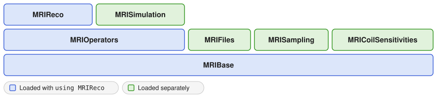

Package Architecture
MRIReco.jl is a family of packages that are developed together in one repository. This page explains how the functionality is divided between the packages, how they depend on each other and which general-purpose packages they build on. The design of the framework is described in more detail in the MRIReco.jl paper.
Building on the Julia Ecosystem
Julia's package manager installs the dependencies of a package automatically, which makes it cheap to divide functionality between packages. MRIReco.jl uses this to implement only the parts that are specific to MRI and relies on general-purpose packages for the rest. The most important ones are
- RegularizedLeastSquares.jl, which provides the iterative solvers, such as CGNR, FISTA and ADMM, and the regularization terms, such as ℓ1, ℓ2 and total variation,
- LinearOperatorCollection.jl, which provides general linear operators, for example Fourier and wavelet operators,
- NFFT.jl, which computes the non-uniform fast Fourier transform needed for non-Cartesian trajectories, and
- AxisArrays.jl, which stores reconstructed images together with their physical axes.
None of these packages is specific to MRI. Putting such general functionality into separate packages is one of the design goals of MRIReco.jl, because other projects can then use it as well. RegularizedLeastSquares.jl and LinearOperatorCollection.jl, for example, are also used by MPIReco.jl for magnetic particle imaging, so improvements made for one imaging modality benefit the other.
Packages in This Repository
The repository contains seven packages, which are registered separately. In the following diagram, each package builds on the packages below it:

MRIBase is the foundation. It defines the data types that the other packages exchange, such as RawAcquisitionData, AcquisitionData and Trajectory, and does not depend on any other package of the repository. These data types are explained on the Data Model page. All other packages build on MRIBase:
- MRIOperators implements the encoding operators, which map an image to k-space data. Besides Fourier operators for Cartesian and non-Cartesian trajectories, it provides operators for coil sensitivities, off-resonance, relaxation and subspace models, which are combined into the encoding operator of an acquisition. It builds on LinearOperatorCollection.jl and NFFT.jl.
- MRIFiles reads and writes ISMRMRD files and reads data from Bruker scanners.
- MRISampling generates undersampling patterns and applies them to acquisition data.
- MRICoilSensitivities estimates coil sensitivities, for example with ESPIRiT, and compresses the data of many coils into fewer virtual coils.
- MRISimulation simulates k-space data of an image, taking into account coil sensitivities, off-resonance and relaxation. It uses the Fourier encoding operators of MRIOperators.
- MRIReco provides the
reconstructionfunction, which combines the encoding operators of MRIOperators with the solvers and regularization terms of RegularizedLeastSquares.jl.
What using MRIReco Loads
MRIReco re-exports MRIBase, MRIOperators and RegularizedLeastSquares.jl, and MRIOperators in turn re-exports LinearOperatorCollection.jl. After using MRIReco, the data types, the encoding operators, the general linear operators and the solvers are therefore all available. The other four packages are independent of MRIReco and have to be loaded explicitly, for example
using MRIReco, MRIFiles, MRICoilSensitivitiesThese packages use MRIBase internally but do not re-export it. When one of them is used without MRIReco, MRIBase has to be loaded as well to access its data types:
using MRIBase, MRIFilesUsing the Packages on Their Own
The division into packages allows using parts of the framework without the reconstruction. Converting raw data between file formats, for example, only needs MRIBase and MRIFiles, and undersampling patterns can be designed with MRISampling. The MRI simulator KomaMRI.jl uses the data types of MRIBase for the raw data it simulates and MRIFiles to store them in ISMRMRD files.
GPU Support
GPU support is implemented in package extensions of MRIOperators and MRIReco, which build on the vendor-independent packages GPUArrays.jl and KernelAbstractions.jl. The extensions are loaded automatically together with a GPU backend such as CUDA.jl or AMDGPU.jl and do not add to the loading time otherwise. GPU Acceleration explains the approach in more detail, and Run a Reconstruction on the GPU shows how to use it.